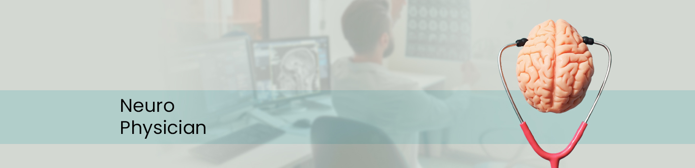
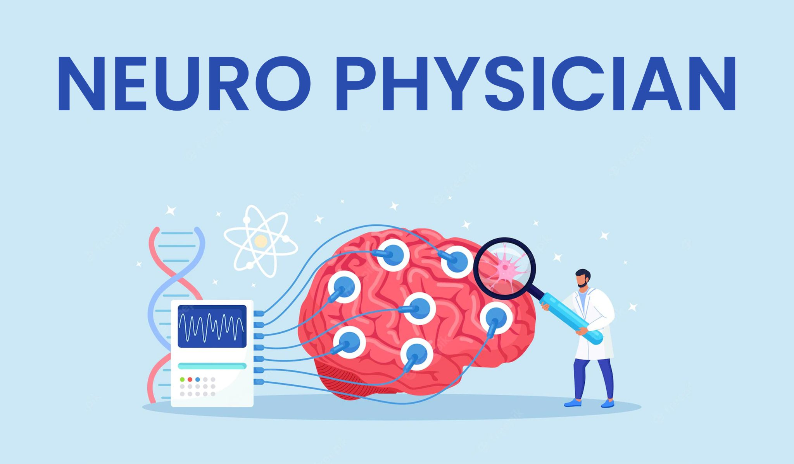

Neuro Physician
A doctor who specializes in neurology is called a neurologist. The neurologist treats disorders that affect the brain, spinal cord, and nerves, such as: Cerebrovascular disease, such as stroke.

We’re passionate about delivering exceptional care and streamlined surgical solutions for our patients. We hope our unique combination of advanced technology and surgical expertise in oral and facial surgery will have you back to full confidence and optimum health with minimal downtime. Our purpose is to listen to each patient, help them understand their options and deliver the best care possible.